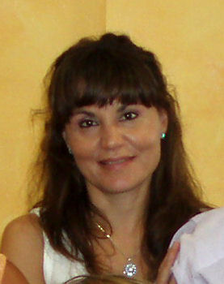

Almudena Vicente Ramos
Almudena Vicente Ramos  Almudena Vicente Ramos
Almudena Vicente Ramos 
 Haz clic aquí para detalles de la Familia de Almudena con Conrado Pérez Martín
Haz clic aquí para detalles de la Familia de Almudena con Conrado Pérez Martín
This page is within a frameset. View the entire genealogy report of Vicente Ramos families, or surname index of Vicente Ramos pedigrees or report summary of Vicente Ramos heritage from "Árbol Genealógico de Manolo y Amalia".
Genealogy Tree.
© 2006 GenoPro Inc. All Rights Reserved.